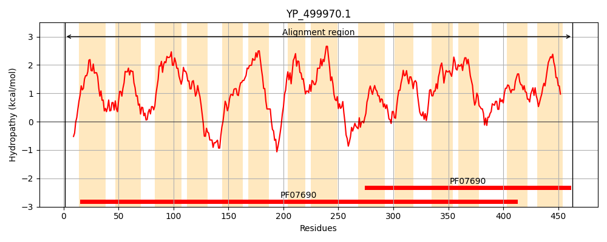
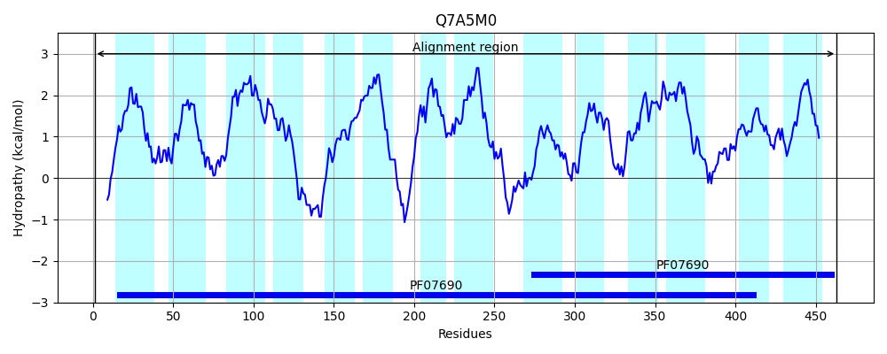
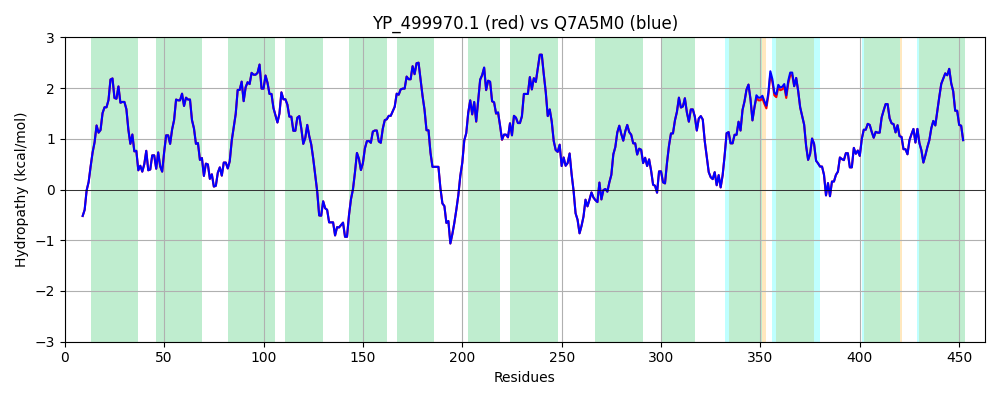

Hit Accession: Q7A5M0
Hit TCID: 2.A.1.3.23
Hit Description: gnl|BL_ORD_ID|15372 gnl|TC-DB|Q7A5M0|2.A.1.3.23 Blt-like protein - Staphylococcus aureus (strain N315).
Mach Len: 463
e:0.000000
Query TMS Count : 14
Hit TMS Count: 14
TMS-Overlap Score: 15.000000
Predicted Substrates:CHEBI:4883;ethidium bromide, CHEBI:9212;sparfloxacin, CHEBI:7007;moxifloxacin, CHEBI:9474;tetracycline, CHEBI:3565;Cetrimide
BLAST Alignment:
Score: 2277 , Bit scores: 881 bits, E-value: 0.0e+00, Alignment length: 463, Percentage identity: 100
Query: 1 MEKPSREAFEGNNKLLIGIVLSVITFWLFAQSLVNVVPILEDSFNTDIGTVNIAVSITALFSGMFVVGAGGLADKYGRIKLTNIGIILNILGSLLIIISNIPLLLIIGRLIQGLSAACIMPATLSIIKSYYIGKDRQRALSYWSIGSWGGSGVCSFFGGAVATLLGWRWIFILSIIISLIALFLIKGTPETKSKSISLNKFDIKGLVLLVIMLLSLNILITKGSELGVTSLLFITLLAIAIGSFSLFIVLEKRATNPLIDFKLFKNKAYTGATASNFLLNGVAGTLIVANTFVQRGLGYSSLQAGSLSITYLVMVLIMIRVGEKLLQTLGCKKPMLIGTGVLIVGECLISLTFLPEIFYVICCIIGYLFFGLGLGIYATPSTDTAIANAPLEKVGVAAGIYKMASALGGAFGVALSGAVYAIVSNMTNIYTGAMIALWLNAGMGILSFVIILLLVPKQNDTQL 463
MEKPSREAFEGNNKLLIGIVLSVITFWLFAQSLVNVVPILEDSFNTDIGTVNIAVSITALFSGMFVVGAGGLADKYGRIKLTNIGIILNILGSLLIIISNIPLLLIIGRLIQGLSAACIMPATLSIIKSYYIGKDRQRALSYWSIGSWGGSGVCSFFGGAVATLLGWRWIFILSIIISLIALFLIKGTPETKSKSISLNKFDIKGLVLLVIMLL+LNILITKGSELGVTSLLFITLLAIAIGSFSLFIVLEKRATNPLIDFKLFKNKAYTGATASNFLLNGVAGTLIVANTFVQRGLGYSSLQAGSLSITYLVMVLIMIRVGEKLLQTLGCKKPMLIGTGVLIVGECLISLTFLPEI YVICCIIGYLFFGLGLGIYATPSTDTAIANAPLEKVGVAAGIYKMASALGGAFGVALSGAVYAIVSNMTNIYTGAMIALWLNAGMGILSFVIILLLVPKQNDTQL
Sbjct: 1 MEKPSREAFEGNNKLLIGIVLSVITFWLFAQSLVNVVPILEDSFNTDIGTVNIAVSITALFSGMFVVGAGGLADKYGRIKLTNIGIILNILGSLLIIISNIPLLLIIGRLIQGLSAACIMPATLSIIKSYYIGKDRQRALSYWSIGSWGGSGVCSFFGGAVATLLGWRWIFILSIIISLIALFLIKGTPETKSKSISLNKFDIKGLVLLVIMLLTLNILITKGSELGVTSLLFITLLAIAIGSFSLFIVLEKRATNPLIDFKLFKNKAYTGATASNFLLNGVAGTLIVANTFVQRGLGYSSLQAGSLSITYLVMVLIMIRVGEKLLQTLGCKKPMLIGTGVLIVGECLISLTFLPEILYVICCIIGYLFFGLGLGIYATPSTDTAIANAPLEKVGVAAGIYKMASALGGAFGVALSGAVYAIVSNMTNIYTGAMIALWLNAGMGILSFVIILLLVPKQNDTQL 463 | Protein Hydropathy Plots: |
|---|
|  |  |
Pairwise Alignment-Hydropathy Plot:
|
|---|
|  |